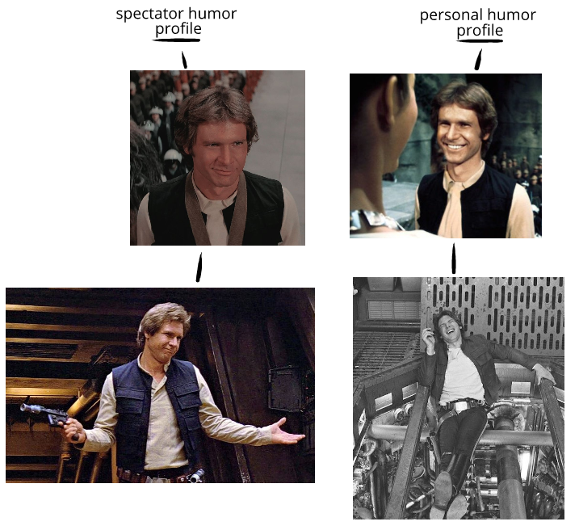
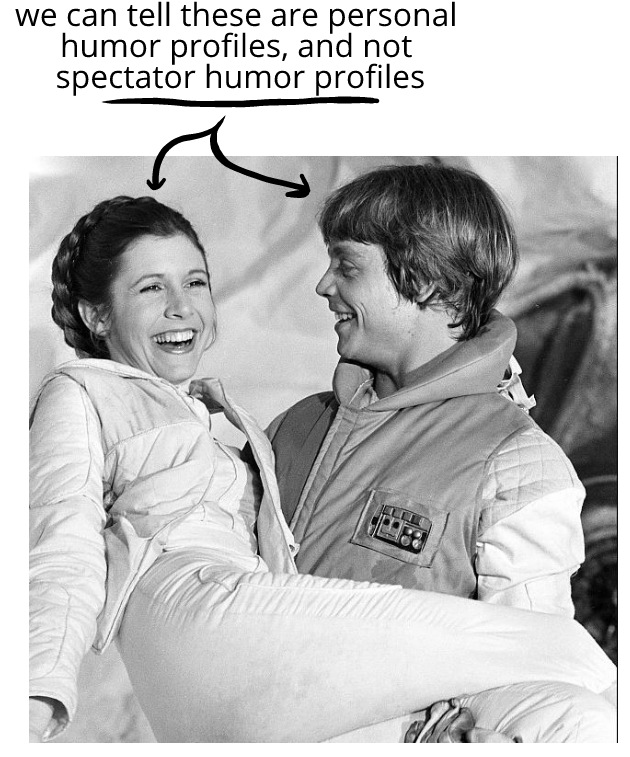
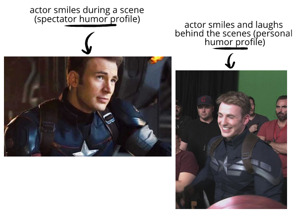

We can often easily distinquish between
In part, that's because the humor we feel is so much more nuanced and vivid than the humor we can act out:
  This isn't unique to humor. We can usually tell when someone is surprised by something or is just